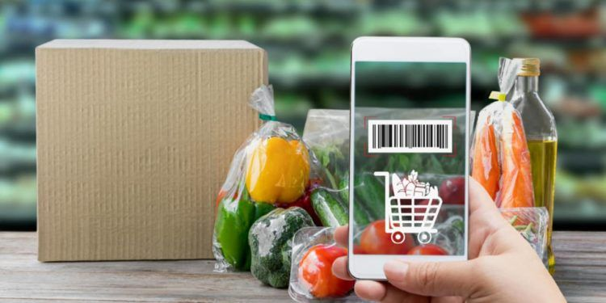

Sobre Nós
"Empreendedores Rurais" é uma plataforma dedicada a fornecer recursos e apoio para indivíduos que desejam iniciar ou expandir seus negócios no setor agrícola e rural. Este espaço online oferece uma vasta gama de conteúdos que inclui artigos, tutoriais, estudos de caso e entrevistas com especialistas do setor. Seu principal objetivo é capacitar agricultores e empreendedores rurais com conhecimentos atualizados sobre práticas sustentáveis, inovação tecnológica, gestão de negócios e acesso a financiamentos. Além disso, o site promove uma comunidade de networking onde os empreendedores podem compartilhar experiências, desafios e soluções, fortalecendo o ecossistema rural e impulsionando o desenvolvimento econômico das regiões mais remotas.